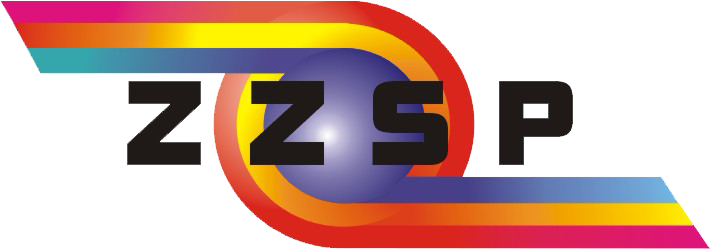
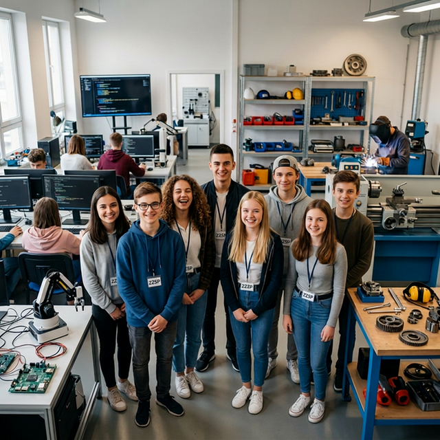

Zgierski Zespół Szkół
Ponadpodstawowych
im. Jana Pawła II

Technikum Innowacji
z oddziałami dwujęzycznymi
Szkoła branżowa
I
i
II
stopnia
Rekrutacja 2026/2027
INFOR
MATOR
Przyszłość buduje się
tutaj
.